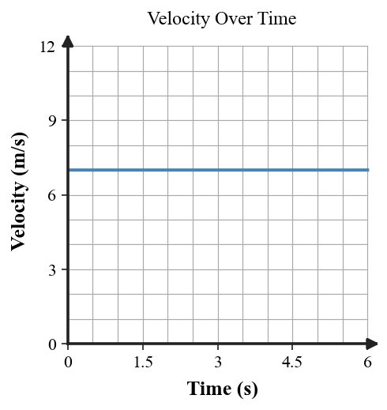
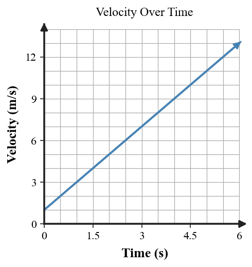
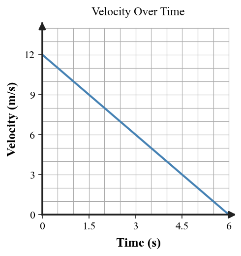

Practice focus: Explain acceleration as a change in velocity and identify or calculate acceleration from descriptions, data, diagrams, and graphs.
Define acceleration as completely as possible using the word velocity.
State one way an object can accelerate by changing speed.
State one way an object can accelerate without changing speed.
A car speeds up in a straight line. Is its velocity changing?
A cyclist slows down in a straight line. Is the cyclist accelerating?
A runner turns a corner at constant speed. Is the runner accelerating?
Classify a parked car as positive, negative, or zero acceleration.
Which quantity is calculated from change in velocity divided by time?
Complete the relationship: $\Delta v = \_\_\_ - \_\_\_$.
On a velocity-time graph, what does a horizontal line indicate about acceleration?

On a velocity-time graph, what does a rising straight line indicate about velocity?

On a velocity-time graph, what does a downward-sloping line toward zero indicate?

A cart changes velocity from 4 m/s to 16 m/s in 6 s. Calculate acceleration.
A bicycle changes from 14 m/s to 2 m/s in 6 s. Calculate acceleration and interpret the sign.
A skateboarder travels east at 6 m/s, turns, and travels west at 6 m/s. Explain whether speed, velocity, and acceleration changed.
Use the lengthening velocity arrows to describe speed change and decide whether acceleration occurs.
Use the shortening velocity arrows to describe speed change and decide whether acceleration occurs.
Use the velocity-time graph to calculate the constant acceleration from its change in velocity over time.
Use the downward velocity-time graph to determine whether acceleration is positive, negative, or zero.
Use the flat velocity-time graph to determine acceleration.
A velocity table reads 1, 3, 5, 7 m/s at one-second intervals. Determine the acceleration pattern.
| Time (s) | 0 | 1 | 2 | 3 |
|---|---|---|---|---|
| Velocity (m/s) | 1 | 3 | 5 | 7 |
A car changes direction from east to north while keeping the same speed. Explain why velocity changes.
A runner goes from 5 m/s to 17 m/s in 4 s. Calculate acceleration and identify whether the runner is speeding up or slowing down.
A cart goes from 12 m/s to 4 m/s in 4 s. Determine $\Delta v$ first, then acceleration.
A student says, “Acceleration only means speeding up.” Correct the misconception using one slowing example and one turning example.
A car moves around a circular track at constant speed. Explain why it accelerates even though the speedometer does not change.
Compare the rising, falling, and flat velocity-time graphs. Explain how each graph communicates the sign or value of acceleration.
A student sees a negative acceleration and says the object must be moving backward. Critique the statement and distinguish velocity direction from acceleration sign.
Design a cart investigation to determine whether acceleration is approximately constant. Identify the data you would collect, how you would calculate acceleration, and what pattern would support the claim.
A story says a cart speeds up, but its velocity-time graph is horizontal. Critique the representation and describe a corrected graph with evidence-based reasoning.